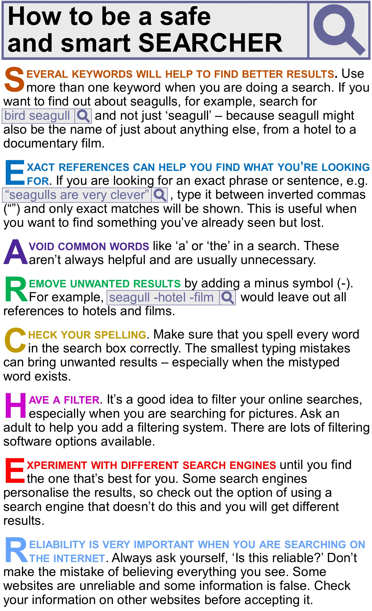

Instructions
Do the preparation exercise first. Then read the poster and do the other exercises.
Reading

Discussion
What type of information do you search for on the internet?
Language level
Personal online tutoring
EnglishScore Tutors is the British Council’s one-to-one tutoring platform for 13- to 17-year-olds.

Comments